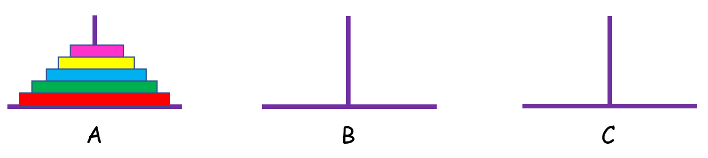
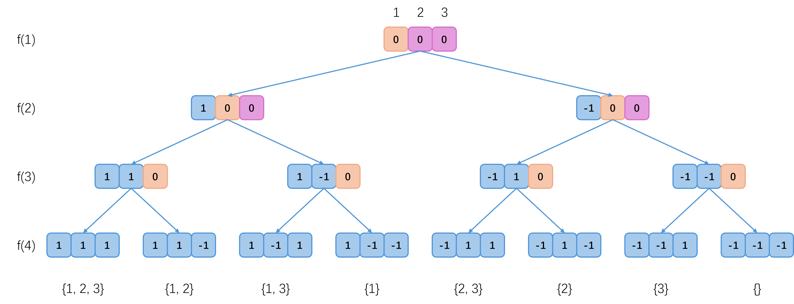
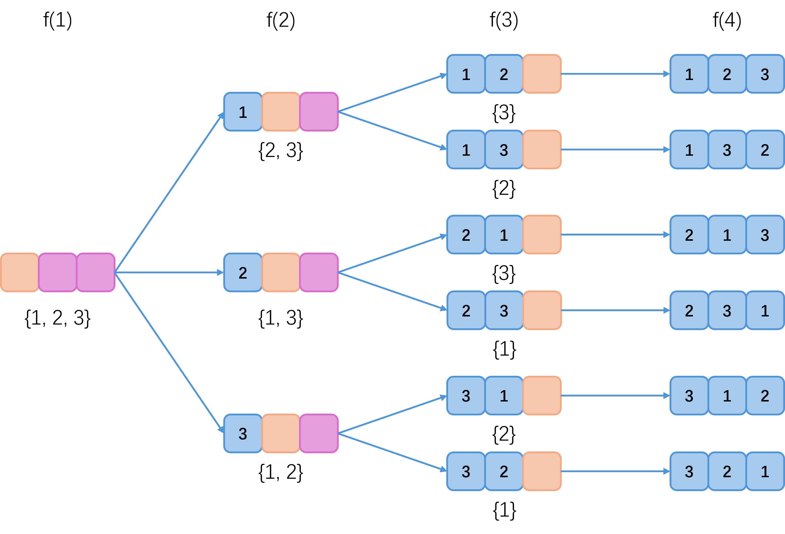

递归
定义
递归，在数学和计算机科学中是指在函数的定义中使用函数自身的方法，在计算机科学中还额外指一种通过重复将问题分解为同类的子问题而解决问题的方法。
理解
对于一个待求解的问题，当它局限在某处边界、某个小范围或者某种特殊情形下时，其答案往往是容易获得的。
如果能够以原问题为起点，尝试把问题的状态空间缩小到容易获得答案的问题边界，并且收缩过程的每个步骤具有相似性。
那么在获得问题边界的答案后，就可以通过反向回溯的方式获得原问题的答案。
这种解决问题的方法就是递归。
这里提到收缩过程的每个步骤应该具有相似性，因为这样才能够保证，我们只需要设计一段程序，就能够重复作用于问题求解的每个步骤。
这就要求程序在每个步骤上应该处理的是相同种类的问题，这些问题都是原问题的一个子问题，可能只是在规模上或者某些限制条件上有所区别，并且这些问题的处理方式与原问题应该是相似的。
算法过程
递归算法的执行过程包括三个部分：
- 缩小当前问题状态空间的规模，这表示程序尝试把当前问题转换为与其相似但规模更小的一个子问题，并期望能够解决这一子问题，进而解决当前问题。
- 尝试解决规模更小的子问题，这有可能成功，也可能失败。
这里由于子问题与原问题是相似的，只是规模更小，那么在求解子问题时，可以把它视为一个新的“原问题”，由相同的程序进行求解，这就是定义中的“自身调用自身”。如果子问题已经来到了问题边界，那么可以直接获得子问题的答案或者判定子问题无解。
- 如果成功解决子问题，那么将子问题的答案扩展到当前问题，就可以得到当前问题的答案。如果不能解决子问题，那么重新回到当前问题，程序可能会继续寻找当前问题的其他转换路线，直至最终解决当前问题或者确定当前问题无解。
如果求解子问题失败，程序需要重新回到当前问题重新寻找其他转换路线，因此在之前尝试的转换过程中对当前问题状态产生影响的操作应该全部失效，这就要求“回溯时还原现场”，这一点在之后递归的应用中会涉及到。
代码模板
在代码层面上，递归有最重要的两个特征：
- 结束条件：说明了最简子问题限制条件，当问题规模收缩到这一条件时，可以直接获得问题的答案或者判定问题无解。
- 自身调用：当原问题转换为一个子问题之后，调用自身程序，进一步解决子问题。
递归代码的一般形式如下：
1 | |
具体应用
汉诺塔
给定三根柱子，记为 、、 ，其中 柱上有 个圆盘，从上到下编号为 到 ，且上面的圆盘一定比下面的圆盘小。问：将 柱上的圆盘经由 柱移动到 柱最少需要多少次操作？输出对应的移动方案。
以下是移动圆盘的规则：
- 一次操作只能移动一个圆盘。
- 一次操作包括从一根柱子上取出顶部圆盘并将其放在另一根柱子的顶部或空的柱子上。
- 任何时候都不能将较大的圆盘放置在较小的圆盘上。
当 时，只有一个圆盘，只需要移动一次： 号圆盘
当 时，最少需要移动三次： 号圆盘 ， 号圆盘 ， 号圆盘
当 时，将问题表示为 ，即有 个圆盘需要从 柱经由 柱移动到 柱。
将 到 号圆盘看作一个整体，那么移动过程就和 时类似：

第一步： 到 号圆盘从 柱（经由 柱）移动到 柱，即
第二步： 号圆盘从 柱移动到 柱，即
第三步： 到 号圆盘从 柱（经由 柱）移动到 柱，即
1 | |
递归实现指数型枚举
从 到 这 个整数中随机选取任意多个，输出所有可能的选择方案。()
每个整数可以选也可以不选，所有可能的方案有 种。
将问题表示为 ，即已经确定了从 到 这些整数的选择情况，目前需要确定整数 的选择情况，还有从 到 这些整数的选择情况需要后续确定。
在每一次递归过程中，分别尝试整数 的“选”与“不选”两条分支，将尚未确定的整数数量减少一个，从而将问题转化为一个规模更小的相似问题。
当原问题缩小到 时，说明已经确定了从 到 这些整数的选择情况，也就是确定了一种选择方案。
当 时，递归过程如下：
蓝色表示已经确定了选择情况，橙色表示目前正在确定选择情况，粉色表示待确定选择情况。0 表示待考虑，1 表示选择这个整数，-1 表示不选这个整数。

可以发现，对于每个整数 ，如果走“选”的分支，会把整数 添加到最终的集合中，所以在每次递归时，走完“选”的分支，应该把整数 从集合中移除，退回到“待考虑整数 的选择情况”这一状态，然后再走“不选”的分支，这就是回溯时还原现场。
1 | |
递归实现组合型枚举
从 到 这 个整数中随机选取 个，输出所有可能的选择方案。()
这一题与上一题类似，只是多了个限制条件，即只能选择 个数，因此基本思路与上一题一致，但在递归过程中需要加两个限制条件：
- 如果目前已经选择的数个数超过 个，则可以确定问题无解，不需要再递归求解。
- 如果目前已经选择的数个数，再选上剩下待选择的所有数，总个数也不足 ，则也可以确定问题无解，不需要再递归求解。
这就是“剪枝”操作，在递归过程中，如果能够及时确定当前问题一定是无解的，就不需要到达问题边界才返回结果，而是直接返回。
1 | |
递归实现排列型枚举
给定从 到 的 个整数，将这 个整数排列成一行，输出所有可能的排列方案。()
所有可能的排列方案有 种。
将问题表示为 ，即已经选择了 个数进行排列，即确定了排列方案的前 个位置的排列次序，目前需要确定第 个位置放置哪一个整数，还有从 到 这些位置的整数排列情况需要后续确定。
在每一次递归过程中，尝试将每个剩余可用的数放置在第 个位置，将尚未确定整数排列情况的位置减少一个，从而将问题转化为一个规模更小的相似问题。
当原问题缩小到 时，说明已经确定了从 到 这些位置的整数排列情况，也就是确定了一种排列方案。
当 时，递归过程如下：
蓝色表示已经确定了排列情况，橙色表示当前位置正在确定要放置哪个整数，粉色表示待确定整数的排列情况。{}表示当前位置上剩余可用于排列的数的集合。

可以发现，对于每个位置 ，如果选择整数 放置在该位置上，会把整数 添加到最终的排列中，所以在每次递归时，递归完“整数 放置在 位置上”的所有情况后，应该把整数 从第 个位置上移除，退回到“待考虑第 个位置的整数放置情况”这一状态，然后再考虑“其他整数放置在 位置上”的情况，这就是回溯时还原现场。
1 | |